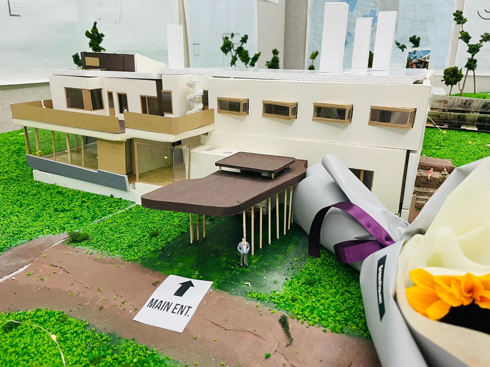

VILLA MAIREA / STUDY
빌라 마이레아를 읽다
알바 알토의 건축을 조사하고, 빌라 마이레아를 도면과 모형으로 재현하며 공간의 구성을 이해했습니다.
- YEAR / SEMESTER
- 1학년 1학기 · 2021
- PROJECT TYPE
- 건축 사례 분석 · 모형
- CONTRIBUTION
- 팀 공동작업 · 개인 드로잉 포함
- SITE / SUBJECT
- 알바 알토의 빌라 마이레아 사례 연구

THE IDEA
생각의 출발점
기존 건축을 다시 그려 보고 만들어 보는 과정으로 공간의 관계를 배웠습니다. 알바 알토의 작품과 자연을 대하는 방식을 조사하고, 평면·입면·단면을 바탕으로 매스 모형, 스터디 모형, 본모형으로 발전시켰습니다.
- 01
사례 조사
알바 알토의 작품과 표현 방식을 팀별로 조사했습니다.
- 02
도면에서 입체로
평면·입면·배치·단면을 읽고 모형으로 옮겨 건물의 공간 구성을 확인했습니다.
- 03
과정의 기록
개인 컨셉 드로잉과 팀 모형 제작, 학기말 전시까지 하나의 과정으로 정리했습니다.
PROCESS & OUTCOME
과정과 결과
사진을 누르면 크게 볼 수 있습니다.